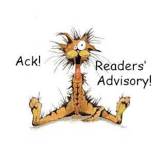
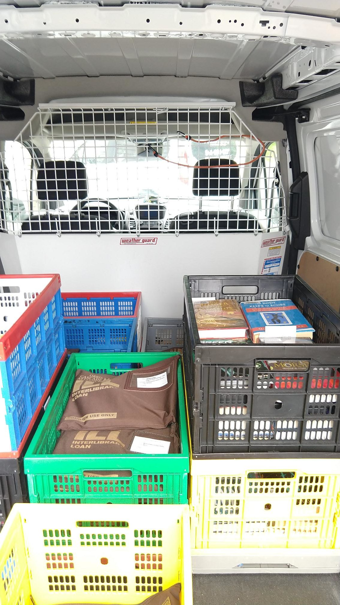

Ope...A Life
-2
These #library entries are from a previous iteration of this journal. Rather than integrate them into the current journal, I'm putting them here. I like them too much to leave them out but am too lazy to integrate them properly, so here they lay. All new #library posts will show in the regular journal.
#library
Two enormous HVAC units sit on pallets outside the library. They'll be installed on the roof tomorrow. Two maintenance workers roll a large cart filled with HVAC parts around the library, looking for a place to stash it for tomorrow's installation.
"Why don't we just put it in there?" asks the first maintenance worker, nodding toward the study rooms. "We'll ask if it's okay."
The second maintenenace worker glances at the study room and hesitates.
The first maintenance worker asks, "Afraid it'll be stolen?"
The second maintenance worker looks to the first maintenance worker and says, "I'm afraid someone will pee on it or something."
#library

How to find new books to read:
- Ask your library staff.
- NoveList, a database probably available through your library, lets you get similar reads by author, title, series, narrator, and keyword.
- Fantastic Fiction offers a "Similar books by other authors" section at the bottom of each book page and a "Visitors to this page also looked at these authors” section at the bottom of each author's page.
- LibraryThing offers a "LibraryThing Recommendations" section on book pages. There are also tag clouds for books and authors.
- Literature-Map allows you to put in an author's name and get similar authors in return, and the effect they use is pretty nifty...like a constellation of authors.
- Whichbook offers searches by mood and emotion, world map, character and plot, and bestsellers.
- Goodreads offers a "Lists With This Book" section on book pages.
#library
Library neutrality. Should libraries play it like the Swiss advocating for neither side, or play it like John Matrix in Commando raining social justice down upon the unrighteous?
Librarian: Remember when I said I was going to forgive your fine?
Patron: That’s right, librarian. You did!
Librarian: I lied.
What it comes down to is that library neutrality isn’t a thing. It's been talked about a lot...a lot a lot a lot a lot, yet it's not mentioned at all by the American Library Association (who really don't mind sharing their thoughts on how libraries should be run) or the Oregon Library Association (who are a group of really wonderful and intelligent people who would have mentioned something about it by now).
(To see if your particular local library association might mention library neutrality you'll have to check yourself, I'm too lazy to look any further.)*
There is a single mention of library neutrality on the State Library of Oregon website in a document of the State Library Board meeting on 4 April 2022 which reads, "Materials should not be proscribed or removed because of partisan or doctrinal disapproval. This professional stance is known as 'neutrality.'"
That particular professional stance is less about neutrality and more about the part of intellectual freedom that prescribes fighting against censorship. And just what is intellectual freedom? Intellectual freedom is defined by the ALA as, "the right of every individual to both seek and receive information from all points of view without restriction. It provides for free access to all expressions of ideas through which any and all sides of a question, cause or movement may be explored."
(I can't believe ALA doesn't use the Oxford comma.)
So what does all this (besides the Oxford comma thing) mean? Library neutrality is just a red herring, there's no objective definition of it and it should not be treated like a core tenet of the profession. (It also means intellectual freedom is very important and controversial in the library world, but since it has a widely understood definition, discussions about it are possible.)
* Library Neutrality is mentioned by the International Federation of Library Associations and Institutions in its IFLA Code of Ethics for Librarians and other Information Workers (full version) but the places it’s mentioned aren’t actually talking about neutrality. They are actually talking about:
- Objectivity: "Librarians and other information workers are strictly committed to neutrality and an unbiased stance regarding collection, access and service. Neutrality results in the most bal-anced collection and the most balanced access to information achievable."
- Objectivity (again): "Librarians and other information workers distinguish between their person-al convictions and professional duties. They do not advance private interests or personal beliefs at the expense of neutrality."
- Honestly? I’m not sure about this one, but it doesn’t feel like neutrality: "Librarians and other information workers have the right to free speech in the workplace provided it does not infringe the principle of neutrality towards users."
#library
It's not every day that I get to direct a patron to "go through the double doors just past the high-fiving sasquatch, turn right, magazines'll be right there."
#library
The Librarian. From the Internet Archives's Blog, you'll find links to other professions including pharmacist, telecommunications, nursing, cab and bus drivers, and welding.
#library
Courier is a very dangerous job in the library world. Shuttling books back and forth ain’t for the faint of heart. As you can see from the picture below, the courier needs protection from the library books. It’s not that the books are evil as such, but they are off the shelf and away from their friends which means they’re scared, confused, and likely to attack until they find themselves back in a library or in the hands of a patron.
Nothing is better to a library book than being in the hands of a patron.
This van just had new security equipment installed but the courier is far braver than I, those books could muscle through those bars at any moment and do some serious damage.

#library
Allowing filming and photography in the library? Some quotes from ALA's Intellectual Freedom Blog.
The law distinguishes between a traditional public forum, or public square, and facilities opened to the public for a particular use or purpose, like a library or a courthouse. Facilities like libraries and courthouses are considered to be limited public forums or non-public forums1 for purposes of the First Amendment. In limited or non-public forums, the government agency administering the space is only obligated to allow those First Amendment activities that are consistent with the nature of the forum, even if the facility is open to the public.
In Kreimer v. Board of Police of Morristown, NJ, an important court opinion addressing a library user’s right to enter and use the library, the court held that because public libraries are a limited public forum, constitutional protection is afforded only to those expressive activities that are consistent with the mission and purpose of the library. A public library is only obligated to permit the public to exercise rights that are consistent with the government’s intent in establishing the library as a limited public forum for the purpose of receiving information and accessing the library’s books, programs, and online resources. According to the Kreimer opinion, other activities, including activities such as photography, filming, petition-gathering, assemblies, and public speeches, may be regulated by the library using reasonable, viewpoint neutral, time, place, and manner rules.
Patron privacy and confidentiality is very important to their intellectual freedom.
#library
hah, sicker than your average
answer all questions off instinct
patrons don't think shit stink, pink gators
my lib'ry players
timbs for librarians, in ref'rence
dead right, got answer right, ref'rence there e'ry night
li'bry been smooth since days of underoos
never lose, never choose to, questions that
do something to us, talk right to us
we talk to 'em, wanna help 'em, aid 'em
who dem? yeah, ref'rence and circ
close like starsky and hutch, in the clutch
dare you grab three of the new dvd
will check out cd easily, busily
recently patrons frontin' ain't askin' nothin' so i just
keep the peace, keep my peace
shush'n with the finger piece, all the peeps
answers, askin' who want 'em, i got it patron flaunt it
that li'bry bullshit, we on it
dewey dewey dewey dec'mal see
sometimes your books just hypnotize me
and i just love your readin' ways
guess that's why they broke and your so paid
dewey dewey dewey dec'mal see
sometimes your books just hypnotize me
and i just love your readin' ways
guess that's why they broke and your so paid
#library
To Saturday librarian, or not to Saturday Librarian? That is the question.
Whether 'tis nobler in the mind to suffer
The slings and arrows of outrageous patrons,
Or to call in sick and start a sea of troubles,
And, by not showing, end them. To lie, to sleep
In late, and by a sleep, to say we snore
The day away, and ignore the thousand natural shocks
That patrons engender? 'Tis a consummation
Devoutly to be wished. To lie, to sleep,
To sleep, perchance to dream. Aye, there's the rub,
For in the lie of sleep, what trouble may come,
When we have lost that gig which gives us dough,
Must give us pause. There's no respect
From going or not, verily we're screwed.
#library
It's about time I got to answer some questions here. The question is, "Do I have a Saturday librarian complex?" Which makes me wonder if this...patron...has any idea as to the kind of education one must receive to become a librarian? Or if they have the vaguest clue about how much weekend fun someone must give up to work on a Saturday? I have an MLIS from an ALA accredited school. I have been awarding summer reading prizes for over thirteen straight weeks, and I am never ever sick at sea. So I ask you: when someone walks into this library and they look around in confusion and they mumble distractedly under their breath with questions ranging from 'where's the bathroom?' to 'will my mother suffer acute neural trauma from postoperative shock?', who do you think they're mumbling to? Now you go ahead and use your Google, patron, and you look at your smart phone, and with any luck you might actually get a signal in the library. But if you're looking for the librarian, they were sitting at the reference desk on a Saturday, and they don't like being second guessed. You want to know if I have a Saturday librarian complex? Let me tell you something - I am a Saturday librarian, and this Saturday ain't over.
#library
Saturday Librarian: I'll answer the question. You want answers?
Patron: I think I'm entitled to them.
Saturday Librarian: You want answers?!
Patron: I want the truth!
Saturday Librarian: We live in a world that has libraries and those libraries have to be staffed by people on Saturdays. Who's gonna do it? You? I have a greater responsibility than you can possibly fathom. You ask your questions when you come in on a Saturday. You have that luxury. You have the luxury of not knowing what I know - that working on Saturdays is tragic, and my existence here today, while taken for granted by you, truly sucks. You ask the questions because deep down when you're runnin' errands on a Saturday and you pop into the library, you want me on that reference desk. You need me on that reference desk! Librarians use words like "intellectual freedom," "privacy," "confidentiality." We use these words as the backbone of a life spent providing something. You use them as a punch line. I unfortunately have the time and the inclination to explain myself to a patron who rises and sleeps under the blanket of the very intellectual freedom I provide on a Saturday and then questions the manner in which I provide it. I would rather you just said "thank you" and went on your way. Otherwise, I suggest you pick up your smart phone and use Google. Either way, I care too damn much about what you're entitled to.
Patron: Did you want to sleep in on Saturday?
Saturday Librarian: I opened the library.
Patron: Did you want to sleep in on Saturday?
Saturday Librarian: You're goddamned right I did!
#library
Yes, I've heard. Answers questions by the hundreds, and if he were here he'd placate the patrons with fireballs from his eyes and bolts of lightning from his arse. I am a Reference Librarian and I see a whole country full of Saturday librarians here in defiance of the laws of nature itself. You have come to answer questions for free, people. And to secure intellectual freedom. And what would patrons be without intellectual freedom?
Aye. Call in sick and you'll sleep in. Sleep in and you'll live comfortably - at least a while. And sleeping in your beds many years from now, would you be willing to trade all the days from this day to that for one chance, just one chance to come back here and tell your patrons that they may take your Saturdays, but they've got intellectual freedom!
#library
In Xanadu did library
A stately pleasure-dome decree:
Where Books, the sacred river, ran
Through stack too measureless to man
Down through a library.
So twice five miles of waiting books
With walls and towers items untook'd;
And there were patrons bright with noxious smells,
Where blossomed many an incense-bearing snook;
And here were forests ancient as the hills,
Now made civilized with print and paste and bindery.
A patron with a small boxer
with vision I sure did see her:
a service animal they claimed
though what performed they couldn't say
And on the carpet fair it sprayed
a stream so large and vile
Could I revive within me
its symphony and smell,
To such a deep distress 'twould win me,
and music much too loud and strong,
and patron who smells of such bong.
That library! Those rows of books!
And all librarians should see them there,
And all should cry, Beware! Beware!
Their flashing eyes, and deep despair!
Check out books and make with nice
And close your eyes with holy dread
For Saturdays do make you dead,
In this library Paradise.